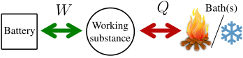
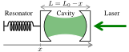
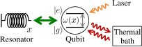
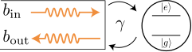
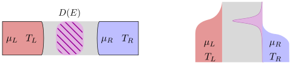
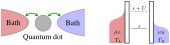
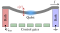

Recherche¶
Thermodynamique quantique¶
{kind=link}
La thermodynamique a été développée au XIXème siècle pour étudier les machines à vapeur exploitant les transformations cycliques d’un fluide calorifique pour extraire de la chaleur de bains thermiques et la convertir en travail, éventuellement stocké dans une batterie. Cette discipline appliquée a finalement permis d’élaborer des concepts fondamentaux tels que l’irréversibilité. La thermodynamique quantique vise à revisiter ces résultats lorsque les fluides calorifiques, bains et batteries deviennent des systèmes quantiques. Voir par exemple Thermodynamics in the quantum regime: fundamental aspects and new directions (la plupart des chapitres sont aussi sur arXiv) pour un passage en revue du domaine.
Ma recherche porte principalement sur la thermodynamique des systèmes quantiques ouverts, dans des régimes pertinents pour les systèmes expériementaux. J’ai surtout étudié des systèmes relevant de l’optique quantique, mais je m’intéresse aussi maintenant au transport électronique.
Optique quantique¶
Optomécanique en cavité
{kind=link}
The light field in an optical cavity interacts with a mechanical resonator via radiation pressure. In a typical setup, the cavity has one moving end-mirror which constitutes the mechanical degree of freedom. When the mechanical position varies, the cavity length changes which modifies its resonance frequency. On the other hand, when adding more photons in the cavity, the radiation pressure on the mirror increases, which shifts the resonator’s rest position. This optomechanical coupling gives a high degree of control on the dynamics of the mechanical resonator through the cavity, making it possible to use this platform for applications such as ground state cooling, sensing or quantum manipulations of the mechanics. It also makes it of great interest for thermodynamics: work and entropy measurenments, heat engines proposals, …
In collaboration with Witlef Wieczorek’s experimental group, we have studied the thermodynamic performance of optomechanical cooling.
Optomechanical cooling with coherent and squeezed light: The thermodynamic cost of opening the heat valve – Phys. Rev. A 103, 063519 (2021) – Video of my talk at the TIQuR workshop
Systèmes hybrides optomécaniques
{kind=link}
This is a different kind of optomechanical system where the optical part is a qubit instead of a cavity. The qubit’s transition frequency is modulated by the vibrations of the mechanical system. The mechanical degree of freedom exchanges work with the qubit and therefore behaves like a dispersive battery, i.e. whose natural frequency is very different from the one of the qubit’s transition. The electromagnetic environment of the qubit plays the role of the thermal bath. The fluctuations of the mechanical energy are equal to the fluctuations of work, which allows the direct measurement of entropy production. As a result, hybrid optomechanical systems are promising for experimentally testing fluctuation theorems in open quantum systems.
An Autonomous Quantum Machine to Measure the Thermodynamic Arrow of Time – npj Quantum Inf. 4, 1 (2018) – Video of my talk at the II Workshop on Quantum Information and Thermodynamics
Atomes unidimensionnel
{kind=link}
A qubit is embeded in a one-dimenstional waveguide and the battery is the waveguide mode of same frequency as the qubit’s transition. Therefore, this is a resonant battery, unlike in the optomechanical case, which makes this platform especially promising to study the impact of coherences on work exchanges.
The Energetic Cost of Work Extraction – Phys. Rev. Lett. 124, 130601 (2020) – Video of my talk at the QTD2020 conference
Systèmes électroniques¶
Mesoscopic conductors
{kind=link}
We study transport in mesoscopic conductors connected to two terminal or more with a scattering approach. We are particularly interested in properties of the current fluctuations in nonequilibrium situations where the average current is zero (for spin, charge, heat, …) .
Charge, spin, and heat shot noises in the absence of average currents: Conditions on bounds at zero and finite frequencies – arXiv:2210.06051
Boîtes quantiques
{kind=link}
A quantum dot is weakly coupled to two baths, namely is two electron reservoirs characterize by a temperature and a chemical potential. Electrons can tunnel in and out of the quantum dot. Parameters of this system can be driven (energies, chemical potentials, tunnel couplings, temperatures, …). We investigate particle and energy currents for slow periodic driving up to the first non-adiabatic correction using a master equation approach and a dissipative symmetry of the system called fermionic duality.
Geometric energy transport and refrigeration with driven quantum dots – Phys. Rev. B 106, 035405 (2022) Editors” suggestion – My poster at the QTD2022 conference
We also use fermionic duality at the jump operator level to explore the stochastic thermodynamics of such kind of systems.
Nanotubes de carbone suspendus
{kind=link}
These devices combine electronic transport and mechanical degrees of freedom which makes them a very promising platform for thermodynamics. Charge or spin qubits can be created inside the nanotube, making these devices similar to hybrid optomechanical systems.
I am taking part in the FQXI project Nanomechanics in the solid-state for quantum information thermodynamics.
Ultrastrong coupling between electron tunnelling and mechanical motion – Phys. Rev. Research 4, 043168 (2022)
Stability of long-sustained oscillations induced by electron tunneling – arXiv:2211.04074